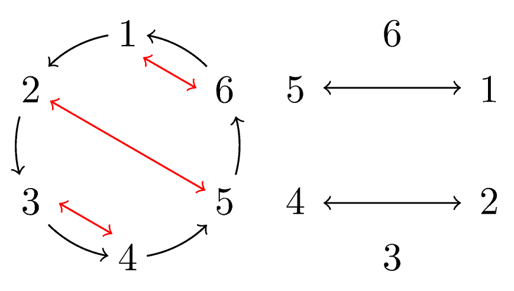

参考例题与题解 - 试机
1294. A+B
输入 \(A, B\)，请计算 \(S = A + B\)。
- 数据范围：共 \(T \leq 10^6\) 组数据，每组 \(0 \leq A, B \leq 10^9\)
Solution
请参考 输入输出与基本数据类型 中的内容。
1 2 3 4 5 6 7 8 9 10 11 12 13 14 | |
1 2 3 4 5 6 7 8 9 10 11 | |
1 2 3 4 | |
1 2 3 4 5 6 7 | |
1295. #include <random>
从 \(1, 2, \dots, n\) 中独立均匀随机地取出两个整数 \(X, Y\)，请问 \(X\times Y\) 是质数的概率是多少？
- 数据范围：\(1 \leq n \leq 10 ^ 9\)，答案与参考答案的误差需小于 \(10^{-5}\)
Solution
只有两种情况满足条件：
- \(X = 1, Y\) 为质数；
- \(Y = 1, X\) 为质数。
因此，如果 \(\leq n\) 的质数有 \(p\) 个，答案为 \(2p / n^2\)。
由于 \(p \leq n\)，因此答案不超过 \(2 / n\)（或者，使用质数定理可以得到更准确的估计：\(O(1 / n \log n)\)）。因此，若要满足 \(\varepsilon\) 的精度要求，对于超过 \(\frac{2}{\varepsilon}\) 的 \(n\)，答案均可以输出 \(0\)。
使用最朴素的判定质数算法，复杂度为 \(O(\frac {1}{\varepsilon} \sqrt \frac {1}{\varepsilon})\)。
1 2 3 4 5 6 7 8 9 10 11 12 13 14 15 16 17 18 19 | |
1 2 3 4 5 6 7 8 | |
当然，熟练的同学可能知道 Meissel–Lehmer 算法，在 \(\tilde O(n ^ {2/3})\) 的时间复杂度下即可求出 \(\leq n\) 的素数个数。本题为了保证数据正确，使用了该算法的结果作为参考答案。
1296. Shuffle
给定一个长度为 \(n\) 的排列，你需要通过最少的操作次数将其排序为 \(1, 2, \dots, n\)。每次操作可以选择若干个不相交的元素对，将它们分别交换。
- 数据范围：\(1 \leq n \leq 10^5\)
Solution
本题题目来源是：ICPC 2021 昆明站 K 题：Parallel Sort，当然实际上这是一个十年前就出现过的经典题。 Fun fact: 交大现场参加的所有队伍都没有做出这道 81/579 通过率的题目。
答案至多为 \(2\)。
答案为 \(0, 1\) 时非常好判断，也即将置换拆为轮换时，长度至多为 \(1, 2\)。
由于存在置换长度为 \(3\) 时，如 \([2, 3, 1]\)，答案至少为 \(2\)。我们来构造一个针对每个长度 \(r\geq 3\) 的轮换，两步归位的方法。我们设当前轮换内的元素为 \(a_1, \cdots, a_r\)，其中每个元素都希望归位到下一个元素所在位置。那么，我们依次交换 \((a_1, a_r), (a_2, a_{r - 1}), (a_3, a_{r - 2}) \dots\) 即可，这样会将大圈拆为大小不超过 \(2\) 的轮换。之后一步归位即可。

1 2 3 4 5 6 7 8 9 10 11 12 13 14 15 16 17 18 19 20 21 22 23 24 25 26 27 28 29 30 31 32 33 34 35 36 37 38 39 40 41 42 | |
1 2 3 4 5 6 7 8 9 10 11 12 13 14 15 16 17 18 19 20 21 22 23 24 25 26 27 28 29 30 31 32 | |
1786. Ctrl + R
给定两个同样长为 \(n\) 的字符串序列 \(S\), \(T\)，判断是否可以通过替换 \(S\) 得到 \(T\)：是否存在一个函数 \(f\)，满足 \(f(S_i) = T_i\)。
- 数据范围：\(1 \leq n \leq 10^3\)，每组数据输入字符串的总长度不超过 \(10^5\)
Solution
使用 map / dict 来记录 \(S_i\) 到 \(T_i\) 的映射关系即可。
1 2 3 4 5 6 7 8 9 10 11 12 13 14 15 16 17 18 19 20 21 22 23 24 25 | |
1 2 3 4 5 6 7 | |